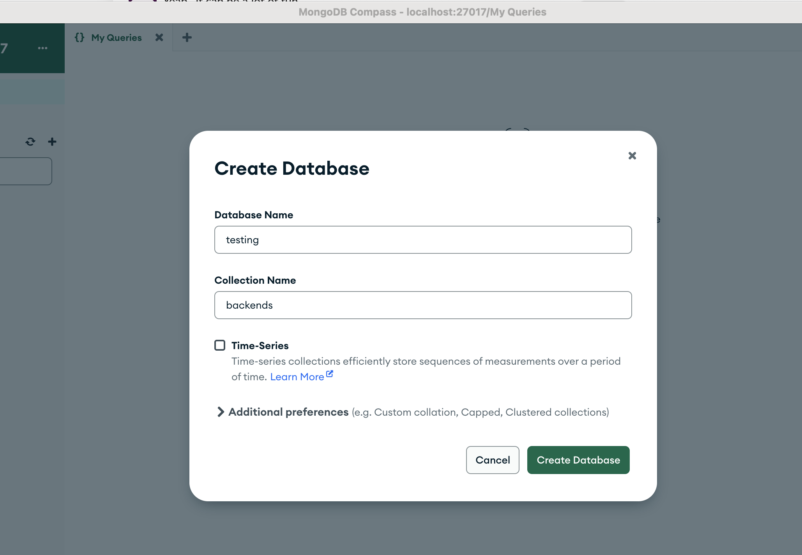

Quick Start
Let’s attempt to setup the tergite stack to run on a dummy cluster on your local machine.
We will not need an actual quantum computer. Take note, however, that the dummy cluster only returns 0 in its results.
Prerequisites
You may have to install these software if you don’t have them already installed.
Setup the Backend
- Ensure you have conda installed. (You could simply have python +3.9 installed instead.)
- Ensure you have the Redis server running.
redis-server- Open terminal.
- Clone the tergite-backend repo
git clone https://github.com/tergite/tergite-backend.git- Create conda environment
conda create -n bcc -y python=3.9
conda activate bcc- Install dependencies
cd tergite-backend
pip install -r requirements.txt- Create an
.envfile with visual studio code (or any other text editor).
code .env- Update
.envfile to have the following content
# .env
APP_SETTINGS=development
IS_AUTH_ENABLED=False
DEFAULT_PREFIX=loke
STORAGE_ROOT=/tmp
LOGFILE_DOWNLOAD_POOL_DIRNAME=logfile_download_pool
LOGFILE_UPLOAD_POOL_DIRNAME=logfile_upload_pool
JOB_UPLOAD_POOL_DIRNAME=job_upload_pool
JOB_PRE_PROC_POOL_DIRNAME=job_preproc_pool
JOB_EXECUTION_POOL_DIRNAME=job_execution_pool
# Main Service Server
MSS_MACHINE_ROOT_URL=http://localhost:8002
MSS_PORT=8002
# Backend Control computer
BCC_MACHINE_ROOT_URL=http://localhost:8000
BCC_PORT=8000
EXECUTOR_CONFIG_FILE=executor-config.yml- Create an
executor-config.ymlfile with visual studio code (or any other text editor).
code executor-config.yml- Update the
executor-config.ymlwith the following content
# executor-config.yml
general:
data_directory: data
clusters:
- name: clusterA
instrument_type: Cluster
is_dummy: true
ref: internal
instrument_address: "192.0.2.141"
modules:
- name: "clusterA_module7"
instrument_type: "QCM_RF"
complex_outputs:
- name: "complex_output_0"
lo_freq: 4458000000
dc_mixer_offset_I: 0
dc_mixer_offset_Q: 0
portclock_configs:
- port: "drive0"
clock: "d0"
mixer_amp_ratio: 1
mixer_phase_error_deg: 0
- name: "clusterA_module8"
instrument_type: "QCM_RF"
complex_outputs:
- name: "complex_output_0"
lo_freq: 5110000000
dc_mixer_offset_I: 0
dc_mixer_offset_Q: 0
portclock_configs:
- port: "drive1"
clock: "d1"
mixer_amp_ratio: 1
mixer_phase_error_deg: 0
- name: "clusterA_module9"
instrument_type: "QCM_RF"
complex_outputs:
- name: "complex_output_0"
lo_freq: 4445000000
dc_mixer_offset_I: 0
dc_mixer_offset_Q: 0
portclock_configs:
- port: "drive2"
clock: "d2"
mixer_amp_ratio: 1
mixer_phase_error_deg: 0
- name: "clusterA_module17"
instrument_type: "QRM_RF"
complex_outputs:
- name: "complex_output_0"
lo_freq: 6838000000
dc_mixer_offset_I: 0
dc_mixer_offset_Q: 0
portclock_configs:
- port: "readout0"
clock: "m0"
mixer_amp_ratio: 1
mixer_phase_error_deg: 0
- port: "readout1"
clock: "m1"
mixer_amp_ratio: 1
mixer_phase_error_deg: 0
- port: "readout2"
clock: "m2"
mixer_amp_ratio: 1
mixer_phase_error_deg: 0- Run start script
./start_bcc.sh --device configs/device_default.toml- Open your browser at http://localhost:8000/docs to see the interactive API docs
Setup the Frontend
- Ensure you have docker is running.
docker --helpOpen another terminal
Clone the tergite-frontend repo
git clone https://github.com/tergite/tergite-frontend.git- Enter the tergite-frontend folder
cd tergite-frontend- Create an
mss-config.tomlfile with visual studio code (or any other text editor).
code mss-config.toml- Update the
mss-config.tomlwith the following content
# mss-config.toml
# general configurations
[general]
# the port on which MSS is running
mss_port = 8002
# the port on which the websocket is running
ws_port = 6532
# environment reflect which environment the app is to run in.
environment = "development"
# the host the uvicorn runs on.
# During testing auth on 127.0.0.1, set this to "127.0.0.1". default: "0.0.0.0"
mss_host = "127.0.0.1"
[database]
# configurations for the database
name = "testing"
# database URI
# host.docker.internal resolves to the host's 127.0.0.1
# see https://stackoverflow.com/questions/31324981/how-to-access-host-port-from-docker-container#answer-43541732
url = "mongodb://host.docker.internal:27017"
[[backends]]
name = "loke"
# the URL where this backend is running
# host.docker.internal resolves to the host's 127.0.0.1
# see https://stackoverflow.com/questions/31324981/how-to-access-host-port-from-docker-container#answer-43541732
url = "http://host.docker.internal:8000"
[auth]
# turn auth OFF or ON, default=true
is_enabled = false
# Puhuri synchronization
# Puhuri is a resource management platform for HPC systems, that is also to be used for Quantum Computer's
[puhuri]
# turn puhuri synchronization OFF or ON, default=true
is_enabled = false- Create a
.envfile with visual studio code (or any other text editor).
code .env- Update the
.envwith the following content
# .env
# required
ENVIRONMENT="development"
WEBGUI_ENDPOINT="http://127.0.0.1:3000"
LANDING_ENDPOINT="http://127.0.0.1:8030"
MSS_ENDPOINT="http://127.0.0.1:8002"
GRAFANA_LOKI_URL=http://127.0.0.1:3100/loki/api/v1/push
LOKI_LOGGER_ID=some-generic-id
# docker LOGGING_DRIVER can be journald, json-file, local etc.
LOGGING_DRIVER=json-file
# image versions:
# Note: If you ever want the images to be rebuilt,
# you have to change the app version numbers here
# before running "docker compose up"
MSS_VERSION=v0.0.1
WEBGUI_VERSION=v0.0.1
LANDING_PAGE_VERSION=v0.0.1
PROMTAIL_VERSION=2.8.3- Open the Mongo compass application and connect to the default local mongo database

- Create a new mongo database called “testing” that contains a “backends” collection.

- Click on “ADD DATA” then “Insert document” in your “backends” collection in your mongo compass

- Copy and paste the following document into the window that opens, replacing everything that was already there.
{
"_id": {
"$oid": "664756593b639968c2d3df24"
},
"name": "loke",
"characterized": true,
"open_pulse": true,
"timelog": {
"REGISTERED": "2023-11-15T16:36:17.474815",
"LAST_UPDATED": "2023-11-15T15:41:51.528Z"
},
"version": "2024.04.0",
"num_qubits": 5,
"num_couplers": 8,
"num_resonators": 5,
"dt": 1e-9,
"dtm": 1e-9,
"meas_map": [
[
0,
1,
2,
3,
4
]
],
"coupling_map": [
[
0,
2
],
[
2,
0
],
[
1,
2
],
[
2,
1
],
[
2,
3
],
[
3,
2
],
[
2,
4
],
[
4,
2
]
],
"device_properties": {
"qubit": [
{
"frequency": 4511480043.556283,
"pi_pulse_amplitude": 0.17555712637424228,
"pi_pulse_duration": 5.6e-8,
"pulse_sigma": 7e-9,
"pulse_type": "Gaussian",
"t1_decoherence": 0.000034,
"t2_decoherence": 0.000033,
"id": 0
},
{
"frequency": 4677112343.360253,
"pi_pulse_amplitude": 0.17535338530538067,
"pi_pulse_duration": 5.6e-8,
"pulse_sigma": 7e-9,
"pulse_type": "Gaussian",
"t1_decoherence": 0.000034,
"t2_decoherence": 0.000033,
"id": 1
},
{
"frequency": 5770226599.80365,
"pi_pulse_amplitude": 0.17873594718151276,
"pi_pulse_duration": 5.6e-8,
"pulse_sigma": 7e-9,
"pulse_type": "Gaussian",
"t1_decoherence": 0.000034,
"t2_decoherence": 0.000033,
"id": 2
},
{
"frequency": 6856217811.995201,
"pi_pulse_amplitude": 0.17326197853513559,
"pi_pulse_duration": 5.6e-8,
"pulse_sigma": 7e-9,
"pulse_type": "Gaussian",
"t1_decoherence": 0.000034,
"t2_decoherence": 0.000033,
"id": 3
},
{
"frequency": 6701096836.557067,
"pi_pulse_amplitude": 0.16948867103728774,
"pi_pulse_duration": 5.6e-8,
"pulse_sigma": 7e-9,
"pulse_type": "Gaussian",
"t1_decoherence": 0.000034,
"t2_decoherence": 0.000033,
"id": 4
}
],
"readout_resonator": [
{
"acq_delay": 5e-8,
"acq_integration_time": 0.000001,
"frequency": {
"$numberLong": "7260080000"
},
"pulse_delay": 0,
"pulse_duration": 9e-7,
"pulse_type": "Square",
"pulse_amplitude": 0.1266499392606423,
"lda_parameters": {
"twoState": {
"score": 0.985,
"coef": [
[
-98953.87504155144,
-114154.48696231026
]
],
"intercept": [
-38.4344477840827
]
},
"threeState": {
"score": 0.9580015923566879,
"coef": [
[
67556.81859745766,
71505.66931668088
],
[
-14142.401380443791,
-68814.26719610114
],
[
-104325.0336269802,
-5256.644766757276
]
],
"intercept": [
18.888335231525723,
-21.898486762901555,
-33.556356307556854
]
}
},
"id": 0
},
{
"acq_delay": 5e-8,
"acq_integration_time": 0.000001,
"frequency": {
"$numberLong": "7380000000"
},
"pulse_delay": 0,
"pulse_duration": 9e-7,
"pulse_type": "Square",
"pulse_amplitude": 0.12660078572926436,
"lda_parameters": {
"twoState": {
"score": 0.987,
"coef": [
[
-107941.00358803963,
-124239.32054386326
]
],
"intercept": [
-42.05181160328822
]
},
"threeState": {
"score": 0.9589968152866242,
"coef": [
[
74144.78052369223,
80219.75345675235
],
[
-20263.355831418605,
-73050.73707640498
],
[
-105237.1576020969,
-14001.985117865986
]
],
"intercept": [
21.107115767442064,
-24.401897244641916,
-36.12273520392597
]
}
},
"id": 1
},
{
"acq_delay": 5e-8,
"acq_integration_time": 0.000001,
"frequency": {
"$numberLong": "7502000000"
},
"pulse_delay": 0,
"pulse_duration": 9e-7,
"pulse_type": "Square",
"pulse_amplitude": 0.08245560237524203,
"lda_parameters": {
"twoState": {
"score": 0.9905,
"coef": [
[
-191087.42493249022,
-20803.06874845618
]
],
"intercept": [
-22.684588212281916
]
},
"threeState": {
"score": 0.9301353503184714,
"coef": [
[
117698.79312336461,
1323.6059974854222
],
[
-73571.40229985592,
-28205.57304588287
],
[
-86186.31020216543,
52503.84189140131
]
],
"intercept": [
8.616211460736217,
-14.506319082756788,
-15.607187419129968
]
}
},
"id": 2
},
{
"acq_delay": 5e-8,
"acq_integration_time": 0.000001,
"frequency": {
"$numberLong": "7712000000"
},
"pulse_delay": 0,
"pulse_duration": 9e-7,
"pulse_type": "Square",
"pulse_amplitude": 0.04188729430238,
"lda_parameters": {
"twoState": {
"score": 0.8735,
"coef": [
[
-29474.17108465108,
78360.1067777809
]
],
"intercept": [
-1.933795064413808
]
},
"threeState": {
"score": 0.7563694267515924,
"coef": [
[
9107.496591845296,
-51304.48625833322
],
[
-21037.874286196384,
28857.813926275605
],
[
23301.518934279466,
43841.15689855003
]
],
"intercept": [
-0.42091088440579094,
-2.3990628805824983,
-3.202495936672423
]
}
},
"id": 3
},
{
"acq_delay": 5e-8,
"acq_integration_time": 0.000001,
"frequency": {
"$numberLong": "7871000000"
},
"pulse_delay": 0,
"pulse_duration": 9e-7,
"pulse_type": "Square",
"pulse_amplitude": 0.05844291534543274,
"lda_parameters": {
"twoState": {
"score": 0.96375,
"coef": [
[
-106998.96952984166,
66774.10489889105
]
],
"intercept": [
-6.6282190356967075
]
},
"threeState": {
"score": 0.8578821656050956,
"coef": [
[
60709.720254705426,
-51675.5747833689
],
[
-49881.622682824636,
16479.42339459183
],
[
-21148.62807007965,
68742.48318120521
]
],
"intercept": [
1.4575641967873554,
-5.385810943207904,
-6.329888946815834
]
}
},
"id": 4
}
],
"coupler": [
{}
]
},
"discriminators": {
"lda": {
"q0": {
"score": 0.985,
"intercept": -38.4344477840827,
"coef_0": -98953.87504155144,
"coef_1": -114154.48696231026
},
"q1": {
"score": 0.987,
"intercept": -42.05181160328822,
"coef_0": -107941.00358803963,
"coef_1": -124239.32054386326
},
"q2": {
"score": 0.9905,
"intercept": -22.684588212281916,
"coef_0": -191087.42493249022,
"coef_1": -20803.06874845618
},
"q3": {
"score": 0.8735,
"intercept": -1.933795064413808,
"coef_0": -29474.17108465108,
"coef_1": 78360.1067777809
},
"q4": {
"score": 0.96375,
"intercept": -6.6282190356967075,
"coef_0": -106998.96952984166,
"coef_1": 66774.10489889105
}
}
},
"qubit_ids": [
"q0",
"q1",
"q2",
"q3",
"q4"
],
"description": "Backend for the simulator supporting qiskit-connector parsing for the release 2024.3"
}- Click “Insert” to insert the document into the “backends” collection.

- To Run the services, use the
fresh-docker-compose.yml.
docker compose -f fresh-docker-compose.yml up -dOpen your browser at
- http://localhost:8030 to see the landing page
- http://localhost:8002 to see the MSS service
- http://localhost:3000 to see the webGUI application
To view the status of the services, run:
docker compose -f fresh-docker-compose.yml ps- To stop the services, run:
docker compose -f fresh-docker-compose.yml stop- To remove stop the services and remove their containers also, run:
docker compose -f fresh-docker-compose.yml down- To view logs of the docker containers to catch some errors, use:
docker compose -f fresh-docker-compose.yml logs -fsee more at https://docs.docker.com/reference/cli/docker/compose/logs/
- Ensure that the services are running. If they are not, restart them.
docker compose -f fresh-docker-compose.yml up -dRun an Experiment
Open another terminal
Create a new folder “tergite-test” and enter it
mkdir tergite-test
cd tergite-test- Create conda environment and activate it
conda create -n terg -y python=3.9
conda activate terg- Install qiskit and tergite SDK by running the command below:
pip install qiskit
pip install tergite- Create a file
main.pywith visual studio code (or any other text editor).
code main.py- Update the
main.pyfile with the following content:
# main.py
"""A sample script doing a very simple quantum operation"""
import time
import qiskit.circuit as circuit
import qiskit.compiler as compiler
from tergite.qiskit.providers import Job, Tergite
from tergite.qiskit.providers.provider_account import ProviderAccount
if __name__ == "__main__":
# the Tergite API URL
API_URL = "http://localhost:8002"
# The name of the Quantum Computer to use from the available quantum computers
BACKEND_NAME = "loke"
# the name of this service. For your own bookkeeping.
SERVICE_NAME = "local"
# the timeout in seconds for how long to keep checking for results
POLL_TIMEOUT = 100
# create the Qiskit circuit
qc = circuit.QuantumCircuit(1)
qc.x(0)
qc.h(0)
qc.measure_all()
# create a provider
# provider account creation can be skipped in case you already saved
# your provider account to the `~/.qiskit/tergiterc` file.
# See below how that is done.
account = ProviderAccount(service_name=SERVICE_NAME, url=API_URL)
provider = Tergite.use_provider_account(account)
# to save this account to the `~/.qiskit/tergiterc` file, add the `save=True`
# provider = Tergite.use_provider_account(account, save=True)
# Get the tergite backend in case you skipped provider account creation
# provider = Tergite.get_provider(service_name=SERVICE_NAME)
backend = provider.get_backend(BACKEND_NAME)
backend.set_options(shots=1024)
# compile the circuit
tc = compiler.transpile(qc, backend=backend)
# run the circuit
job: Job = backend.run(tc, meas_level=2, meas_return="single")
# view the results
elapsed_time = 0
result = None
while result is None:
if elapsed_time > POLL_TIMEOUT:
raise TimeoutError(
f"result polling timeout {POLL_TIMEOUT} seconds exceeded"
)
time.sleep(1)
elapsed_time += 1
result = job.result()
print(result.get_counts())- Execute the above script by running the commnad below.
python main.py- It should return something like:
{0: 1024}Note: We get only 0’s because we are using the dummy cluster from quantify scheduler